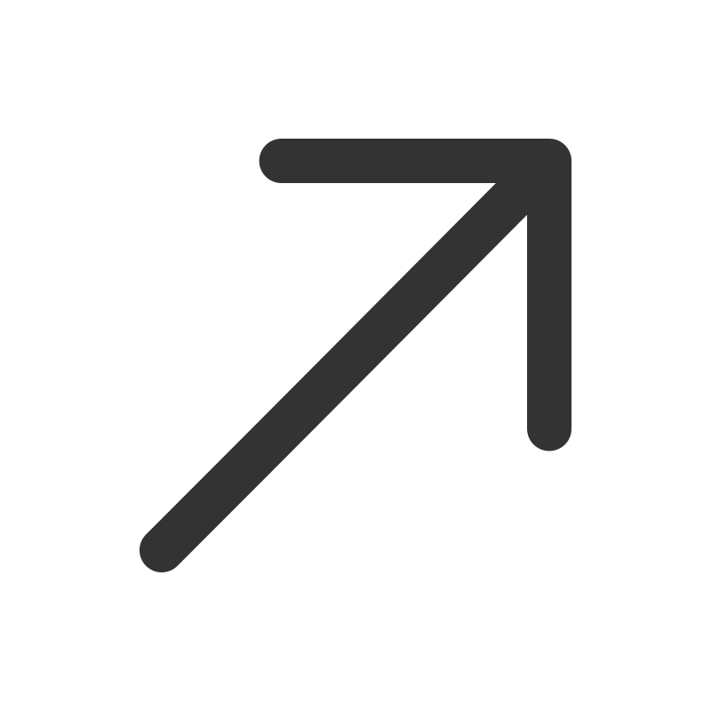

Matthew Tognotti
Software Engineer
I'm a recent graduate from Santa Clara University. I studied Electrical and Computer Engineering. For two years I was a research assistant in the Human Interaction and Innovation Robotics Lab at SCU.
We developed a mobile manipulator interfaced through speech; check out videos of the robot in action below and our publications here

Work Experience
Human Machine Interaction and Innovation Laboratory
Sept. 2023 - Sept. 2024
Software Engineer & Researcher
Led a project funded by the National Science Foundation's Research Experience for Undergraduates to develop a robot learning system for a mobile manipulator to learn and execute user-taught pick-and-place tasks.
- Enhanced robot delivery task efficiency by 67% through code optimization in Python.
- Authored and presented a conference publication at IEEE RO-MAN, cited in [1].
- Videos of the robot and the learning system are here
June, 2023 - Sept., 2023
Kuehler Researcher
Collaborated with PhD students to develop a speech-to-action robotic system, enabling a mobile manipulator to identify, pick, and place household items based on speech commands using Robot Operating System (ROS), Google Speech-to-Text, GPT-Neo, and Intel RealSense RGBD Cameras.
- Recipient of the Kuehler Research Award at Santa Clara University for contributions to the HMI2 Lab
- Designed user studies and co-authored the publications cited in [2] and [3].
Jan, 2023 - June, 2023
Research Assistant
- Designed an API to control a manipulator and mobile base using Python and Robot Operating System (ROS).
- Created software to teleoperate a manipulator for kinesthetic teaching using the MoveIt Motion-Planning Framework. Developed software and 3D meshes to simulate a lab environment in RViz for obstacle avoidance.
Education

Santa Clara University
B.S., Electrical & Computer Engineering
September 2024

GPA: 3.65/4.0; Cum Laude
Coursework: Robotics, Data Structures & Algorithms, Real-time Embedded Systems, Computer Architecture, OS
Publications
-
International Conference on Robotic Computing (IRC)
[1] Tognotti M. and Kyrarini M., 2024. Are you Ready? an Intelligent Robotic Assistant for Instrumental Activities of Daily Living. In 2024 Eighth IEEE International Conference on Robotic Computing (IRC), pp. 249-252, doi: 10.1109/IRC63610.2024.00038
-
International Conference on Automation, Robotics and Applications (ICARA)
[2] Kodur K., Zand M., Tognotti M. and Kyrarini M., 2024. Translucent Object Grasping Using Robot Vision. In 10th International Conference on Automation, Robotics and Applications (ICARA), pp. 107-111, IEEE. doi: 10.1109/ICARA60736.2024.10552988
-
A User Study
[3] Kodur K., Zand M., Tognotti M., Jauregui C. and Kyrarini M., 2023. Structured and Unstructured Speech2Action Frameworks for Human-Robot Collaboration: A User Study. doi: 10.36227/techrxiv.24022452
Awards, Skills, & Interests
- Awards:
-
- Kuehler Research Award for Robotics (2024)
- First Place in Senior Design Conference for Robotics (2024)
- Skills:
-
-
 C/C++
C/C++
- Python
-
 Linux
Linux
-
 Git
Git
- Robot Operating System
- Robotic Manipulation
-
 Kinematics
Kinematics
-  Motion Planning
-
- Interests:
-
- Brazilian Jiu-Jitsu
- Guitar
-
 Reading
Reading
-
 Cooking
Cooking
-
 Camping
Camping
Robot Videos
This first video shows the robot executing a task that it was previously taught.
This video shows the robot retrieving a single object for the user.
The final video demonstrates how a user can teach the robot a task.